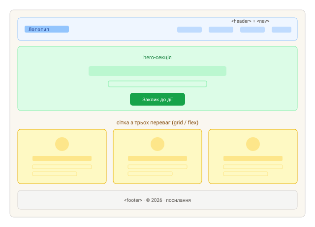

Практика: CSS
Найзручніше експериментувати на CodePen. Спробуй сам, а потім звір із рішенням.
Завдання 1. Центрування по обох осях
Розмісти блок (напр. картку або кнопку) точно по центру екрана — і по
горизонталі, і по вертикалі — за допомогою Flexbox. Контейнер має займати всю висоту
вікна (100vh), а вміст лишатися центрованим при будь-якому розмірі вікна.
Класика, яку варто памʼятати напамʼять.
Рішення
.wrapper {
display: flex;
justify-content: center;
align-items: center;
min-height: 100vh;
}Завдання 2. Адаптивна сітка карток
Зроби сітку з 6–8 карток, що сама змінює кількість стовпців залежно від ширини екрана —
без жодного медіазапиту. На широкому екрані — кілька карток у ряд, на
вузькому — одна під одною; картки зберігають мінімальну ширину й рівномірний проміжок
(gap). Спробуй звузити вікно й побачити, як стовпці «перетікають» самі.
Підказка
Ключ — repeat(auto-fit, minmax(...)).
Рішення
.grid {
display: grid;
grid-template-columns: repeat(auto-fit, minmax(220px, 1fr));
gap: 20px;
}Завдання 3. Кнопка з ефектом наведення
Стилізуй кнопку (відступи, колір, скруглення, курсор-вказівник) так, щоб при наведенні
вона плавно змінювала колір фону й трохи піднімалася вгору. Ключове —
transition, щоб зміна була не миттєвою, а анімованою; ефект підняття роби
через transform: translateY(...), а не через зміну відступів.
Рішення
.btn {
padding: 0.6rem 1.2rem;
background: #2563eb;
color: #fff;
border: none;
border-radius: 6px;
cursor: pointer;
transition: background 0.2s ease, transform 0.2s ease;
}
.btn:hover {
background: #1e40af;
transform: translateY(-2px);
}Завдання 4. Лендинг-макет (виклик)
Збери простий, але цілісний лендинг із чотирьох блоків: шапка (логотип ліворуч + меню праворуч), hero-секція (великий заголовок, підзаголовок і кнопка-заклик по центру), сітка з трьох переваг (іконка + заголовок + опис у кожній) і підвал із копірайтом. Зроби макет адаптивним: на телефоні меню й переваги складаються в один стовпчик. Орієнтуйся на схему нижче. Це підготовка до першого мілстоун-проєкту.

Підказка
Секції — семантичні теги (header, section,
footer). Меню й сітку переваг зручно робити на
flex/grid; для адаптиву додай один медіазапит або
flex-wrap/auto-fit.